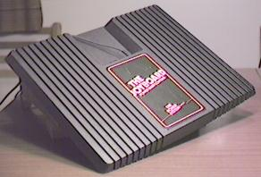
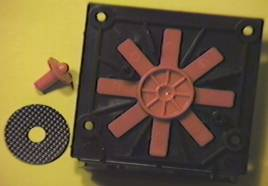

Amiga Joyboard
The world's first home-console balance board — a foot-operated Atari 2600 controller that gave us the 'Guru Meditation' error screen.

Overview
The Amiga Joyboard was a balance board peripheral for the Atari 2600, released in 1983 by Amiga Corporation — the same small Los Gatos / Santa Clara startup that was secretly developing the revolutionary Lorraine prototype (what would become the Commodore Amiga computer). Shaped like a large plastic platform, the Joyboard had four mechanical joystick-directional latches mounted on its underside. A player would stand on the board and lean their body forward, back, left, or right to engage the latches, translating full-body movement into digital joystick input. It shipped bundled with Mogul Maniac, a slalom skiing game, and was demonstrated at toy fairs and on television by Olympic freestyle skier Suzy Chaffee.
Commercially, the Joyboard was a footnote — the 1983 video game crash was in full swing, and only one game officially shipped for it. But its cultural legacy is outsized. During the grueling development of the Amiga computer operating system, frustrated engineers used the Joyboard as a stress-relief device: they would sit cross-legged on it and attempt to remain perfectly still, avoiding triggering any of the directional switches. This practice, dubbed 'Guru Meditation,' became the name of the Amiga's infamous system-crash error screen — one of the most recognizable error messages in computing history. Decades later, game designer Ian Bogost created a legitimate zen meditation game for the Joyboard called Guru Meditation, bringing the lore full circle.
Deep dive
The Joyboard was the product of Amiga Corporation's early incarnation — a period often romanticized as when the 'true' Amiga ideals were forged, before Commodore's 1984 acquisition. Founded in 1982 (originally as Hi-Toro) and funded by three Florida dentists, the company operated out of Santa Clara, California. While Jay Miner, RJ Mical, Carl Sassenrath, and Dale Luck worked in secrecy on the 'Lorraine' computer prototype, the company needed cash flow and a cover story. They entered the video game peripheral market with the Power Stick joystick, several Atari 2600 game cartridges, and the Joyboard. The Joyboard was announced at the Winter Consumer Electronics Show in January 1983 and shown again at Summer CES 1983 in Chicago. At $50 bundled with Mogul Maniac, it promised a new kind of gaming that used the whole body.
The Joyboard was deceptively simple. It consisted of a flat plastic platform measuring roughly 15¼ by 12¼ inches with a small pivoting disc underneath, less than three inches in diameter, that contacted the floor. Inside, four mechanical directional latches — essentially the same switches found in a standard Atari 2600 joystick — were mounted on the underside of the board. When a player stood on the board and leaned their body weight in any of the four cardinal directions, the corresponding latch engaged, sending that directional signal to the console via a standard DE-9 joystick cable. A pass-through joystick port on the board allowed a conventional joystick (like Amiga's own Power Stick) to be plugged in for games that needed a fire button, letting the player control direction with their feet while pressing the button with their hands. The hardware was entirely mechanical — no pressure sensors, no accelerometers, just your body weight closing simple switches.
Using the Joyboard was a radically different experience from conventional game controllers of the era, which were exclusively hand-operated joysticks, paddles, or keypads. Standing on the board required gross motor coordination and whole-body balance. In Mogul Maniac, the bundled slalom skiing game, players leaned left and right to navigate between ski gates while racing downhill, dodging trees. The physicality of the interaction was genuinely novel — it turned the player's entire body into the controller, years before dance pads, motion controls, or balance boards became familiar concepts. Amiga also developed Surf's Up (a surfing game) and Off Your Rocker (a pattern-matching memory game) for the Joyboard, though neither saw official release. The Joyboard could also be used with existing maze-type Atari 2600 games, offering what the company marketed as a 'different challenge.'
The Joyboard launched into a brutal market. By 1983, the North American video game industry was collapsing — the infamous crash that would see Atari bury millions of unsold cartridges in a New Mexico landfill. Amiga Corporation's game peripherals, including the Joyboard and Power Stick, sold in very limited quantities. Only Mogul Maniac was officially bundled and sold. Off Your Rocker cartridges were completed but handed off to a third party (Pleasant Valley Video) for distribution rather than being sold directly by Amiga. Surf's Up, the first game developed for the Joyboard, was never released at all — only two cartridges are known to exist today. The Joyboard itself faded into obscurity almost immediately, though Amiga Corporation would soon be acquired by Commodore for $25 million in 1984, and the 'Lorraine' would become the Amiga 1000.
The Joyboard's most enduring legacy has nothing to do with gaming. During the early development of the AmigaOS operating system, the system crashed so frequently that engineers developed a ritual: they would sit cross-legged on a Joyboard like a meditating guru, attempting to remain perfectly still. If a developer moved enough to trigger a directional latch, their 'meditation' was broken. This practice was memorialized as the 'Guru Meditation' error screen — a red box displaying cryptic hexadecimal codes that appeared when the Amiga operating system suffered a fatal crash. The error message became legendary, referenced in everything from the Varnish HTTP accelerator to the ESP32 microcontroller firmware. In 2007, game designer and scholar Ian Bogost created Guru Meditation, a homebrew Atari 2600 game that turned the Joyboard into a legitimate zen meditation tool: players must sit perfectly still on the board, and if successful, an on-screen yogi rises and begins to float. The Joyboard also holds a place in HCI history as the first commercial full-body home console controller, arriving 23 years before Nintendo's Wii Balance Board (2007) and anticipating an entire genre of physically interactive gaming.
Team & pioneers
- Jay Miner. Hardware architect and co-founder of Amiga Corporation; led development of the Lorraine prototype alongside the Joyboard era
- David Shannon Morse. CEO of Amiga Corporation during the Joyboard's development and release
- RJ Mical. Software engineer at Amiga Corp; later created the Amiga Intuition GUI; told the Guru Meditation origin story in Info Magazine (1987)
- Suzy Chaffee. Olympic freestyle skier who demonstrated the Joyboard with Mogul Maniac on television and at toy fairs in 1983
- Ian Bogost. Game designer and scholar who created the homebrew Atari 2600 game Guru Meditation (2007) for the Joyboard, turning the lore into a working zen meditation game
Media



Sources
- Joyboard — Wikipedia
- Guru Meditation — Wikipedia
- How We Created the AMIGA Computer by Robert J. Mical, Info Magazine Issue 13 (1987)
- Pointing Devices for Personal Computers: Mice Lead the Way — InfoWorld, Aug 8, 1983
- The Joyboard game controller — Computer History Museum (catalog #102633096)
- Amiga Joyboard — Hrothgar's Cool Old Junk Page (Doug Spence)
- Joyboard — Big Book of Amiga Hardware
- News & Products: Stand-On Game Controller — COMPUTE! Issue 40, September 1983
- The Prehistory of Wii Fit — Ian Bogost, Water Cooler Games (2007)
- Guru Meditation game — Ian Bogost
- Amiga Inc - Creators of a Dream — Amiga History Guide
- HIGH TECH — Skiing magazine, Dec 1983 (Mogul Maniac mention)